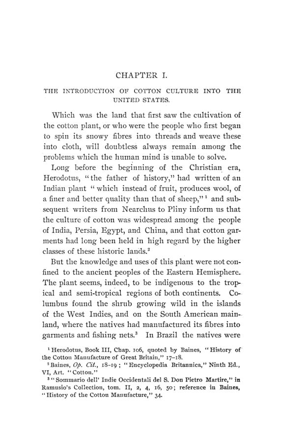

Hammond, 1897: o algodão que o crédito obrigava a plantar
Leitura: 11 min
Em 1897, M. B. Hammond mostrou por que o agricultor do Sul americano plantava mais algodão quando o preço caía: a safra estava penhorada ao comerciante antes de ir para a terra.


Condado de Montgomery, Alabama, anos 1890. O formulário é impresso, com lacunas para nome, valor e data. O agricultor declara que recebeu adiantamentos em mulas, provisões e ferramentas “para fazer uma safra”, e que sem eles não conseguiria plantar. Renuncia a todas as isenções que a Constituição e as leis do estado lhe garantem. Cede ao credor toda a colheita de algodão, caroço, milho, forragem, ervilha e batata. Se não pagar, o credor pode tomar a safra e os bens, vendê-los quando quiser e leiloar a terra no Artesian Basin de Montgomery, depois de quatro semanas de aviso no jornal.
O documento está reproduzido em The Cotton Industry, de M. B. Hammond, assistente de economia da Universidade de Illinois. O livro abriu a nova série das Publications, em dezembro de 1897. É a tese de doutorado do autor na Escola de Ciência Política da Universidade Columbia. O plano incluía a manufatura do algodão, adiada para outra obra; este volume trata da lavoura e do comércio. A pesquisa somou bibliotecas, entrevistas com operadores de Nova York e uma viagem pelos estados algodoeiros no outono de 1895.
O algodão criou a escravidão americana?
Não, responde Hammond. A escravidão já existia havia um século e meio nas colônias inglesas quando ocorreu a alguém usar trabalho escravo no algodão. O que a fibra fez foi dar à instituição um papel central. Depois da descaroçadeira de Eli Whitney, a lavoura se espalhou para as terras novas do Sudoeste e puxou consigo a demanda por escravizados, sobretudo depois do fim do tráfico africano. O preço de uma pessoa escravizada passou a acompanhar o algodão.
Os políticos sulistas tiravam daí uma tese: sem escravidão não haveria algodão, e sem algodão a indústria da Europa pararia. Hammond mostra que nem Lancashire acreditou. Em discurso em Londres, em 16 de junho de 1863, John Bright sustentou que o algodão do trabalho escravo era um mau negócio para os próprios fiandeiros ingleses:
“a oferta há de ser sempre insuficiente e, em segundo lugar, sempre insegura” (“the supply must always be insufficient, and, second, that it must always be insecure”)
Os números do pós-guerra encerraram a discussão. Em 1876, a safra já correspondia à de 1860, a maior anterior à guerra: pouco mais de 2 bilhões de libras-peso, em menos de 12 milhões de acres. Em 1895, a produção chegava a 4,792 bilhões de libras, em cerca de 23 milhões de acres.
Por que produzir o dobro rendia o mesmo?
Porque o preço caiu mais depressa do que a produção cresceu. Até 1890, a queda foi lenta e compensada por adubos, frete mais barato e maior produtividade. Depois, despencou: a média em Nova York passou de 10,44 centavos por libra-peso entre 1880 e 1890 para 7,81 centavos entre 1891 e 1895. Segundo Hammond, quem colheu em 1894 o dobro de 1875 recebeu a mesma renda, e quase um terço menos do que com a safra menor de 1890.
Parte da explicação é geográfica. O Texas, sexto produtor em 1859, tinha em 1894-95 mais de um quarto da área plantada e quase um terço da produção, em terras novas que dispensavam adubo. Mas o centro do livro é outra pergunta: por que o agricultor do Leste continuava a plantar para um mercado em queda?
Quem decidia o que plantar?
O credor. Antes de 1860, o grande fazendeiro tomava empréstimo de um factor, o agente comercial dos portos, dando a safra em garantia; raramente se adiantava mais de 10 dólares por fardo esperado. A guerra destruiu essa base: já não havia escravizados para servir de garantia, a terra quase nada valia e as grandes fazendas se partiram em lotes de arrendatários. Logo após a guerra, quase todos os estados aprovaram as lien laws, que permitiam hipotecar a safra ainda não plantada. Hammond rejeita a crítica comum a essas leis: elas apenas legalizaram um sistema que já existia e era o único crédito possível.
O emprestador passou a ser o comerciante da vila. Ele quase nunca emprestava dinheiro. Adiantava milho, toucinho, roupas, ferramentas e adubo, e cobrava o juro embutido no preço a prazo. Com a hipoteca registrada, nenhum outro comerciante vendia fiado ao devedor, e a colheita ia para o credor ao preço do dia. No sul da Geórgia, a farinha que valia US$ 3 à vista em 1º de março saía por US$ 4 a crédito, com desconto de 25 centavos por mês até agosto.
A escolha da garantia virou escolha da lavoura. O algodão tinha venda certa o ano inteiro e era conhecido no Sul como “a lavoura do dinheiro”. Milho e toucinho, ao contrário, eram exatamente o que o comerciante vendia; se o agricultor os produzisse, deixaria de precisar de crédito. Hammond cita Henry W. Grady, em 1889, sobre o agricultor que tentou diversificar:
“foi avisado de que reduzir a área de algodão era reduzir sua linha de crédito” (“he was notified that reducing his cotton acreage was reducing his line of credit”)
O resultado é o paradoxo do livro: quanto mais o preço caía, mais algodão se plantava para pagar a dívida, e mais o preço caía. Hammond não demoniza o comerciante. Lembra que o lucro remunera risco, que muitos desses credores quebravam e que todos carregavam contas não liquidadas de um ano para outro. Mas conclui que a maioria dos plantadores estava presa ao algodão “por uma lei tão inexorável quanto qualquer outra já promulgada” (“by a law as inexorable as any ever promulgated”), mais dura que a de qualquer governo, porque lei se contorna e a ordem do credor, não.
Por que os bancos não ocupavam esse espaço?
Porque quase não existiam. Em setembro de 1895, os dez estados algodoeiros tinham 417 bancos nacionais, 214 deles no Texas: um para cada 33.660 habitantes, contra um para cada 16.600 no país. A lei exigia capital mínimo de US$ 50 mil e proibia esses bancos de emprestar sobre terra. Na Geórgia, 123 condados não tinham nenhum banco.
Onde havia banco, o teto legal do juro se contornava com facilidade. Numa parte da Geórgia, o máximo era 8% ao ano, mas os bancos rurais descontavam principal e juro a 15%: quem pedia 100 dólares por um ano recebia US$ 91,66 e devolvia US$ 108, quase 18% de custo efetivo. As agências de crédito hipotecário, de capital nortista, cobravam taxas e retinham o primeiro ano de juros; um plantador da Geórgia que tomou US$ 400 recebeu US$ 335.
A exceção que o autor destaca é o National Bank of Newberry, na Carolina do Sul, descrito pelo major Harry Hammond em 1883. O capital de US$ 150 mil fora subscrito no próprio condado. Três quartos das 654 contas eram de agricultores, o desconto desde 1872 variava de 7% a 12%, e os créditos duvidosos de dez anos não chegavam a US$ 6 mil. Não se pediam penhoras de safra: bastava o aval de vizinhos, que se garantiam uns aos outros. Ainda assim, um correspondente da mesma região estimava em 1893 que três quartos dos agricultores locais estavam insolventes.
Qual era o remédio?
Hammond descarta, um a um, os planos em voga: campanhas para reduzir a área plantada, imposto sobre o acre de algodão, cunhagem livre de prata, proibição dos contratos futuros, um truste de plantadores, corte de tarifas. Todos supunham que o agricultor escolhia o que plantar, e a maioria não escolhia. A saída, para ele, era crédito: as cooperativas de crédito ou “bancos do povo” da Europa continental, fundadas quase meio século antes e nunca tentadas nos Estados Unidos. Nada de caridade, adverte, mas sempre iniciadas por alguém disposto a bancar o primeiro experimento.
Os contratos futuros eram jogo?
O livro termina com o mercado, e aqui Hammond toma o lado impopular. Os chamados anti-optionists acusavam os vendedores a descoberto de derrubar o preço com algodão fictício, negociado em volume oito ou dez vezes maior que a safra. O autor responde que, pela regra 4 da Bolsa de Algodão de Nova York, todo contrato obrigava à entrega; que a Suprema Corte, em Irwin v. Williar e Bibb v. Allen, recusara tratá-los como aposta; e que, se o preço cai abaixo do que indicam as estimativas de safra, os vendedores correm a recomprar. Admite o jogo: com uma ou duas centenas de dólares de margem, gente sem conhecimento do mercado especulava. Mas proibir a venda a termo seria um golpe no mecanismo moderno do comércio, e o golpe cairia com mais força sobre os produtores do Sul, que vendiam a safra meses antes de colhê-la.
Na minha leitura
Na minha leitura, o melhor do livro é tratar a superprodução como resultado de um contrato, não de um erro de cálculo do agricultor. Quando o crédito, a venda de insumos e a compra da safra estão na mesma mão, a garantia aceita pelo credor decide a alocação da terra. O preço a prazo era juro sem nome, e o teto da usura, ao ser contornado por descontos e comissões, só tornava o custo menos visível. Hammond percebe também que campanhas para “plantar menos” fracassam quando quem planta não decide.
A segunda lição é sobre o remédio. Ele não pede ao Estado que fixe preço ou área; pede instituições que deem ao pequeno produtor acesso a crédito sem entregar a safra inteira ao fornecedor. O exemplo de Newberry mostra a força do aval entre vizinhos e do capital local, e o depoimento de 1893 mostra o limite de um banco isolado. E a defesa dos futuros é um lembrete útil: o mercado que transmite a má notícia do preço raramente é a causa dela.
Glossário
- Penhor de safra (crop lien)
- garantia sobre a colheita futura, registrada antes do plantio, que dá ao credor o primeiro direito sobre ela.
- Lien laws
- leis estaduais do pós-guerra que permitiram hipotecar safras ainda não colhidas ou não plantadas.
- Factor
- agente comercial das cidades portuárias que vendia o algodão do fazendeiro e lhe adiantava dinheiro.
- Comerciante fornecedor (advancing merchant)
- lojista do interior que adiantava mercadorias a crédito contra a futura colheita.
- Preço a prazo
- preço cobrado na venda fiada, acima do preço à vista; a diferença funcionava como juro.
- Lei da usura
- teto legal para a taxa de juros.
- Desconto
- empréstimo em que o juro é deduzido no ato, de modo que o tomador recebe menos do que o valor que devolve.
- Contrato futuro
- compromisso de comprar ou vender uma mercadoria numa data futura a preço fixado hoje.
- Cooperativa de crédito
- associação em que os próprios membros reúnem recursos e emprestam entre si, com responsabilidade comum.
Fontes
- The Cotton Industry. An Essay in American Economic History: Part I. The Cotton Culture and the Cotton Trade (pp. 3–382). JSTOR · Internet Archive (PDF)
- Sumário da edição no JSTOR: Publications of the American Economic Association, Nova série, nº 1.
Documento em domínio público (EUA, publicado antes de 1931), via JSTOR Early Journal Content e Internet Archive. Resumo e comentário do autor deste site, sem afiliação com a American Economic Association. Encontrou um erro? Escreva: a correção é publicada no próprio texto, com data.
← Nº 50 · Fisher, 1896: o juro que antecipa o valor da moeda Nº 52 · O censo sob exame: o que os números de 1890 não sabiam contar →